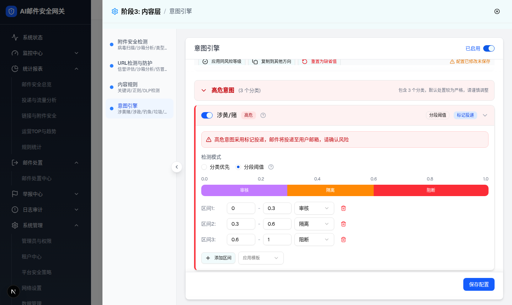
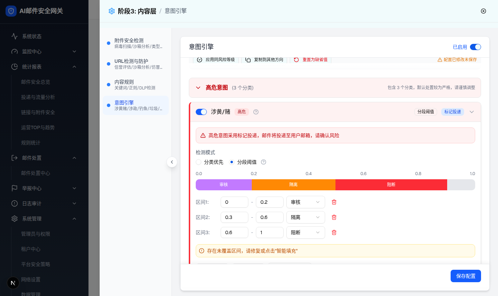
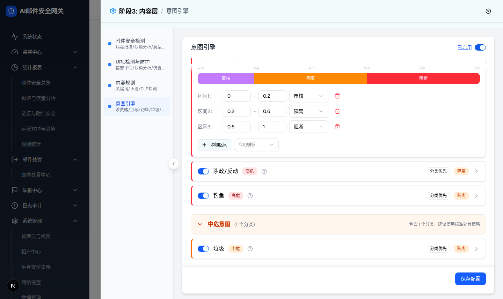
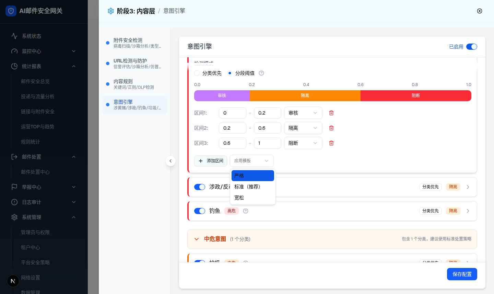
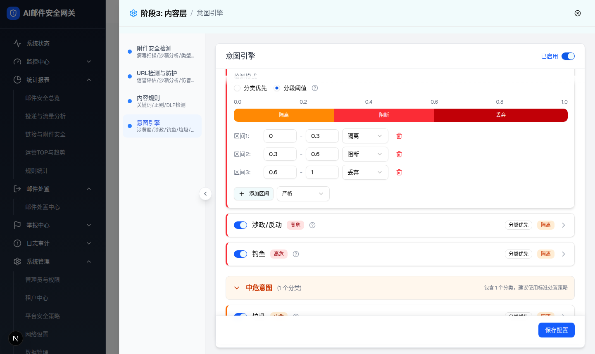
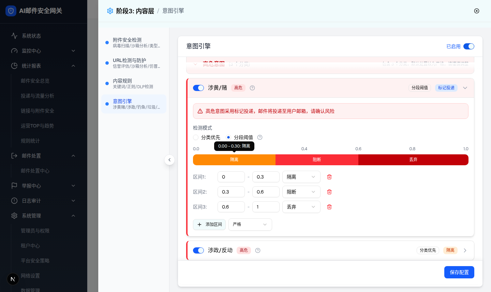
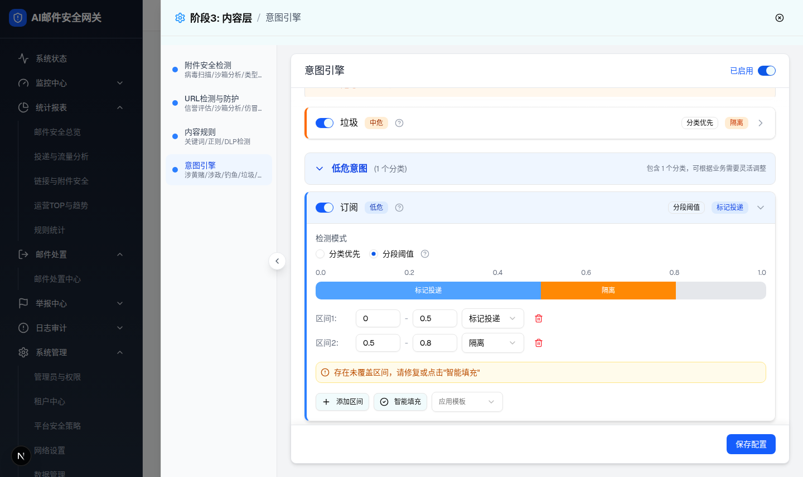

| 所属组件 | 2.3 意图分类卡片 → 展开区（ThresholdSegmentConfig + ThresholdVisualBar） |
| 主文件 | index.html |
| 触发路径 | 层级1 卡片展开 → 检测模式选「分段阈值」→ 分类优先配置区替换为阈值配置区 |
| 浏览器验证 | 涉黄/赌（高危）切分段阈值：默认区间 0-0.3审核 / 0.3-0.6隔离 / 0.6-1阻断，可视化条 30%/30%/40% 三段（紫/橙/红）。将区间1 max 0.3→0.2 出现间隙警告与「智能填充」按钮；点击智能填充后区间变 [0,0.2][0.2,0.6][0.6,1] 警告消失。应用模板下拉 3 项：严格/标准（推荐）/宽松；选「严格」后区间变 0-0.3隔离 / 0.3-0.6阻断 / 0.6-1丢弃。hover 条块 Tooltip「0.00 - 0.30: 隔离」。区间覆盖完整时点「添加区间」无变化（前后均 3 行）。删除区间后立即出现间隙警告。数字输入实测属性 type=number min=0 max=1 step=0.01。 |
操作提示：改区间1的最大值（如 0.3→0.2）制造间隙 → 出现琥珀警告与「智能填充」；应用模板下拉试「严格」；hover 彩条看区间 Tooltip；删除到只剩 1 个区间时删除按钮消失。







| 元素 | 实际渲染/默认值 | 交互行为（浏览器验证） | 备注 |
|---|---|---|---|
| 刻度行 | 0.0 / 0.2 / 0.4 / 0.6 / 0.8 / 1.0 六个等距刻度 | 静态 | PRD §2.2.4 一致 |
| 可视化条 | h-8(32px) 圆角，底色 gray-200；区间块宽 = (max-min)×100%，按动作着色：标记投递 blue-400 / 隔离 orange-400 / 审核 purple-400 / 阻断 red-500 / 丢弃 red-700 | hover 块透明度变化 + Tooltip「区间范围: 动作」；宽度 >12% 时块内显示动作名（源码 width>12 判定） | 与 PRD §2.4 色板一致；条不可拖拽（仅展示） |
| 区间行 | 「区间N:」+ min 输入 +「-」+ max 输入 + 动作 Select + 删除按钮；输入 type=number min=0 max=1 step=0.01 | 修改任意值即时重排序（按 min 升序）并重绘可视化条；非数字被 parseFloat‖0 修正为 0；动作选项按方向过滤（接收5项/外发域内4项） | 手输超出 0-1 不钳制（差异 D-06） |
| 删除按钮 | 红色垃圾桶图标 | 删除该区间；仅剩 1 个区间时按钮不渲染（至少保留1个） | PRD §4.1 一致 |
| 间隙警告 | 琥珀色条「存在未覆盖区间，请修复或点击"智能填充"」 | 区间未从0开始 / 未到1结束 / 相邻区间不连续（容差0.001）时显示 | 仅内联提示，保存无校验（D-05） |
| 添加区间 | outline 按钮 + Plus 图标 | 末区间 max<1 时追加 [lastMax,1]，动作沿用末区间；覆盖已完整时点击无变化（实测前后均3行）；空列表时创建 [0,1] 隔离 | - |
| 智能填充 | outline 按钮 + CheckCircle2 图标，仅有间隙时显示 | 前移各区间 min 补齐间隙、末区间 max 拉到 1、首区间 min 归 0 | 实测 [0,0.2][0.2,0.6][0.6,1] |
| 应用模板 | Select placeholder「应用模板」；选项：严格 / 标准（推荐）/ 宽松 | 选择后整组区间被覆盖：严格 0-0.3隔离/0.3-0.6阻断/0.6-1丢弃；标准 0-0.3标记投递(接收)或审核/0.3-0.7隔离/0.7-1阻断；宽松 0-0.5标记投递(接收)或审核/0.5-0.8审核/0.8-1隔离 | 与 PRD §6.3 完全一致 |
| 默认区间（按风险） | 高危 0-0.3审核/0.3-0.6隔离/0.6-1阻断；中危 0-0.2标记投递/0.2-0.6隔离/0.6-1阻断；低危 0-0.5标记投递/0.5-0.8隔离/0.8-1审核 | - | 外发/域内默认区间同值（含标记投递），见差异 D-06 |
| 比对项 | demo 实际 DOM | 提取的 HTML 预览 | 是否一致 |
|---|---|---|---|
| 可视化条根节点 | div.h-8.bg-gray-200.rounded-lg.overflow-hidden.flex | .vbar 32px 圆角 flex | 一致 |
| 条块（默认高危） | 3 块：bg-purple-400 30% 审核 / bg-orange-400 30% 隔离 / bg-red-500 40% 阻断（style width 百分比） | JS 按同公式渲染 3 块同色同宽 | 一致 |
| 区间行数与值 | 3 行：[0,0.3]审核 [0.3,0.6]隔离 [0.6,1]阻断；输入 min=0 max=1 step=0.01 | 同数据同属性 | 一致 |
| 间隙警告条 | gap 时渲染 div.bg-amber-50.border-amber-200 + AlertCircle，文案一致 | 同条件显示同文案 | 一致 |
| 智能填充按钮 | 仅 hasGap 时渲染；点击后区间 [0,0.2][0.2,0.6][0.6,1]，警告消失 | 同条件同结果 | 一致 |
| 模板选项 | [严格, 标准（推荐）, 宽松]；选严格后 [0,0.3]隔离 [0.3,0.6]阻断 [0.6,1]丢弃 | 同选项同结果 | 一致 |
| 条块 Tooltip | 实测「0.00 - 0.30: 隔离」 | hover 显示同格式文案 | 一致 |
| 删除按钮条件渲染 | segments.length>1 时渲染（源码验证 + 删除路径实测） | 剩 1 行时按钮不渲染 | 一致 |